1 PrerequisiteTo enter into EDL mode, a Windows PC (Windows 10/11) is required. For flashing, you can either use Windows or Ubuntu of your choice. 1.0 Download and Install ADB and Fastboot DriversBefore proceeding with any flashing or updates, make sure to download and install the ADB and Fastboot drivers. These drivers are necessary for your PC to communicate with the LEC-RB5N module. You can download the required drivers from the following links: Android USB Driver: Download Here ADB Fastboot Tool: Download Here 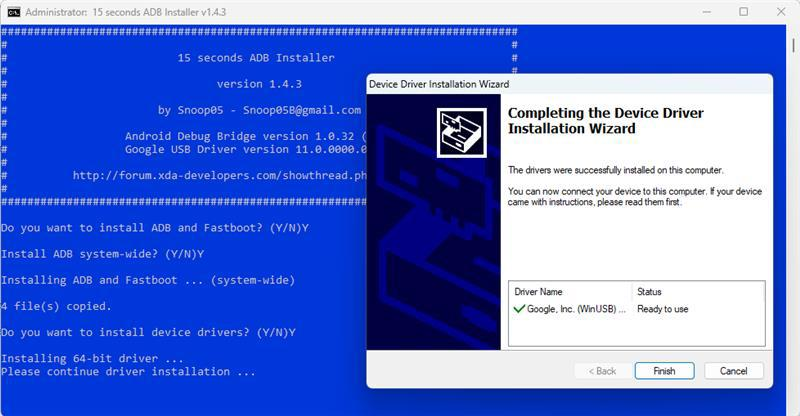 Note: If you encounter the “0 Files Copied Error” during the flashing process, it may be due to compatibility issues with the latest ADB drivers. In this case, download and install the 15_Second_ADB_Installer_v1.3.0 version instead. 1.1 Download QPST Tool and Qualcomm USB Driver to Flash ImageFor the first-time flashing process, you will also need to download the Qualcomm Product Support Tool (QPST) and the Qualcomm USB driver. These are essential to load the image onto the LEC-RB5N module via QFIL Tool. Please note: You will need a QUALCOMM account with special privileges to access the driver and tool. To obtain new login access, please contact Qualcomm/ADLINK. USB Driver: QUD.WIN.1.1 INSTALLERWhen installing the USB driver, select the setup type as ETHERNET-DHCP. 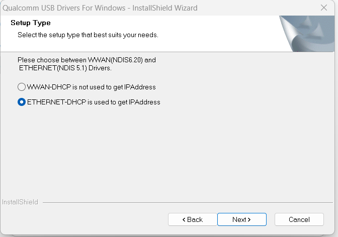 QPST Tool: QPST.WIN.2.7 INSTALLERDuring installation, choose the Complete setup option. 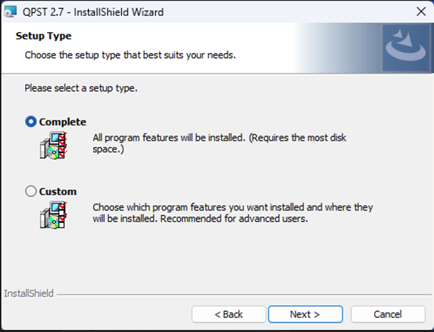 Once the QPST Tool is installed, the Qualcomm Flash Image Loader (QFIL) Tool will be available on your PC. You can open QFIL by searching for it in the Windows search bar under Applications. 2 How to Flash ImageNote: This step is only required ,If module was Empty. If Module has been already flashed , Skip this section 2.2 Flashing BSP Image (Released ) 2.3 Flashing BSP Image (Yocto Build) Non-HLOS Image available at https://www.ipi.wiki/pages/i-pi-smarc-rb5-download 2.0 Enter into EDL Mode To enter Emergency Download (EDL) Mode. Follow these steps: 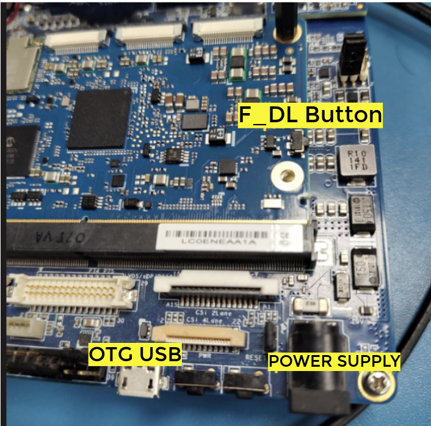 Press the F_DL Key Button on the module. While holding the F_DL Key Button, power on the module by connecting the power cable. Once the module powers on, release the F_DL Key Button and connect the OTG USB cable to the module. 2.1 Flashing on ModuleTo Flash the image, Use the QFIL Tool and follow the steps below. The image being flashed includes the NON-HIGH LEVEL OPERATING SYSTEM (NON-HLOS) firmware, bootloader, kernel, and file system. Image Path:Ensure that the image path on your host PC is short (e.g., from the root drive): #windows_Drive:/LEC-RB5N-8G-YOCTO-XX-XX/LEC-RB5N-8G-NON-HLOS-YOCTO-XX-XX/ First, enter the module into EDL Mode (refer to Section 2.0 for instructions). Once the LEC-RB5N enters EDL mode, the QFIL Tool will detect the module as Qualcomm HS-USB QDLoader 9008. To enter into EDL mode, a Windows PC (Windows 10/11) is required. For flashing , you can either use Windows or Ubuntu of your choice.To enter into EDL mode, a Windows PC (Windows 10/11) is required. For flashing , you can either use Windows or Ubuntu of your choice.Open the QFIL Tool and verify that the COM port is detected. Configuring the Module for Flashing:To configure the module for flashing, follow these steps: Select the “FLAT“ build option. Select the configuration as shown in the image below for flashing the module.Make sure the module is detected in the QFIL Tool before proceeding. 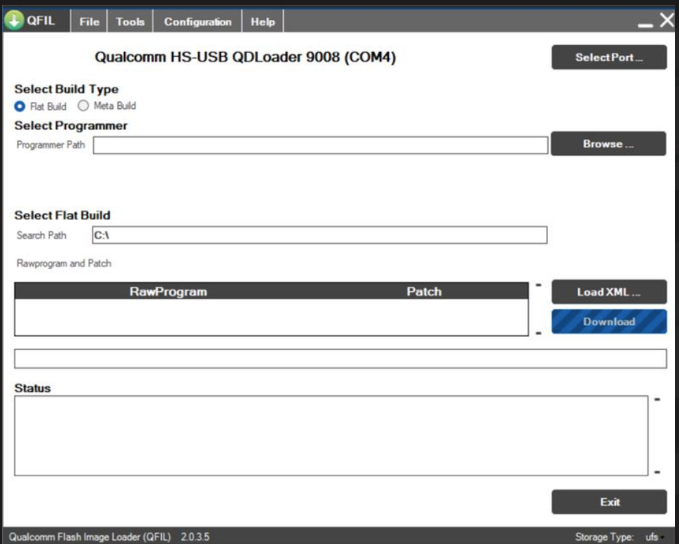 Flashing Steps: Click on the “Browse” tab and select prog_firehose_ddr.elf. Go to the “LOAD XML” tab and select all the .xml files needed for flashing. 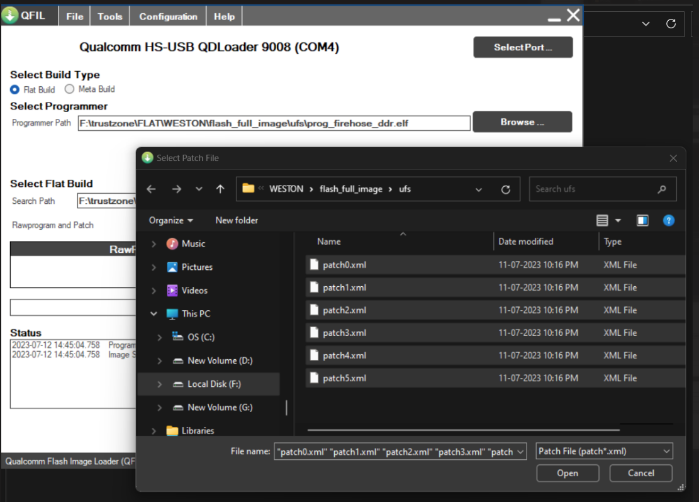 Once everything is configured, click Download. The flashing process will begin and notify you once the download is complete. After flashing, the module will enter into Fastboot mode. 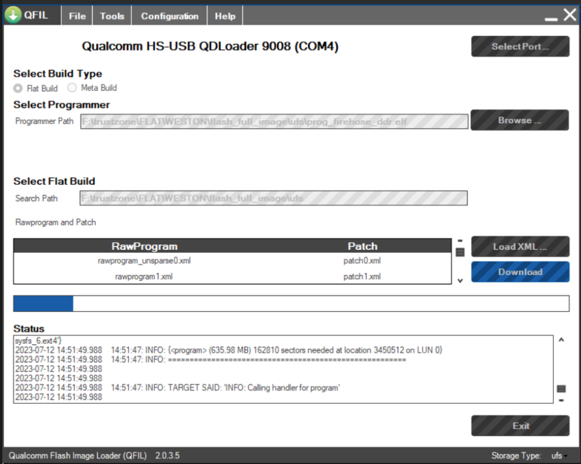 Attention: After the image flashed successfully, the target device automatically reset itself and enters into Fastboot mode. Do not turn off (or) Reset the target device manually,It causes the image packages to break, resulting in the inability to boot. 2.2 Flashing BSP Image (Released )Once the module is flashed (using the QFIL tool), you can proceed with updating the Board Support Package (BSP), which includes the kernel and filesystem. Required Images:For updating the BSP, you will need the following images: qti-yocto-robotics-image-qrb5165-rb5-boot.img qti-yocto-robotics-image-qrb5165-rb5-sysfs.ext4 abl.elf These images can be found in the directory: /LEC-RB5N-8G-YOCTO-XX-XX/LEC-RB5N-8G-HLOS-YOCTO-XX-XX/ Steps to Update BSP Image: Connect the USB OTG cable between the target board and the Host PC. Open the command prompt on the host PC. Navigate to the directory where the BSP images are located: # cd /LEC-RB5N-8G-YOCTO-XX-XX/LEC-RB5N-8G-HLOS-YOCTO-XX-XX/ To check if the target board (LEC-RB5N) is detected, run the following command: # fastboot devices -l If the board is not listed, ensure that the Qualcomm USB driver is correctly installed (refer to the Device Manager for any yellow exclamation marks). Once the board is detected, use Fastboot to flash the images: # fastboot flash boot_a qti-yocto-robotics-image-qrb5165-rb5-boot.img # fastboot flash boot_b qti-yocto-robotics-image-qrb5165-rb5-boot.img # fastboot flash system qti-yocto-robotics-image-qrb5165-rb5-sysfs.ext4 # fastboot flash abl_a abl.elf # fastboot flash abl_b abl.elf # fastboot reboot To Use ADB ShellAfter updating the BSP image , if you need to interact with the device, you can use ADB shell Steps to Use ADB Shell: Connect a USB Micro Cable between your host PC and the LEC-RB5N module. Run the following command to verify that the device is detected: #adb devices -l This will list the connected devices. If the device is not listed, check the Device Manager for any issues with the Qualcomm USB driver. The driver may have to be manually selected and updated as detailed in the screenshots below. 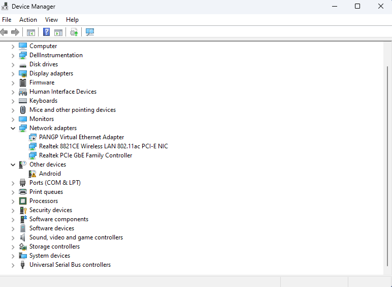 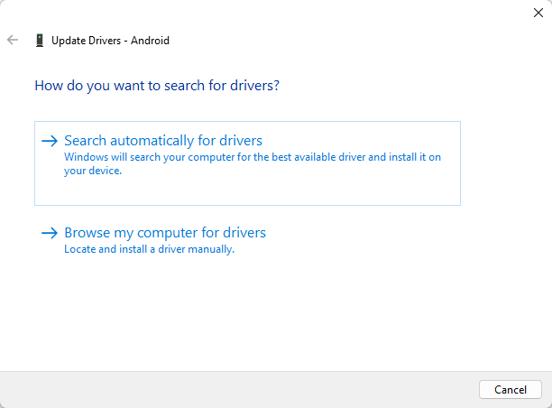 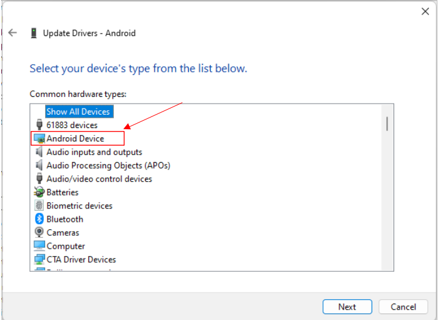 If the driver is already present in the system at this stage and should be available in the list as ‘Android ADB Interface’. 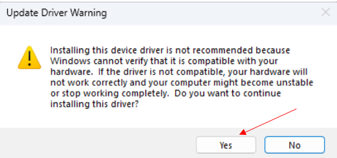 If the device is listed correctly, enter the ADB shell by running: # adb shell 2.3 Flashing BSP Image (Yocto Build)If you prefer to flash image build using yocto in Linux environment (Ubuntu), follow the steps below . Make sure you have the required tools installed on your Ubuntu system. Use the following commands to install them: # sudo apt-get -y install img2simg gzip # sudo apt install android-tools-adb android-tools-fastboot Steps to Flash Image Using Yocto Build: Navigate to the Yocto build output directory. # cd /path/to/yocto/build/output/ Decompress image : # gzip -fdk rpb-<MACHINE_NAME>.ext4.gz Convert the decompressed image: # img2simg rpb-<MACHINE_NAME>.ext4 qti-yocto-robotics-image-qrb5165-rb5-sysfs.ext4 Copy the boot image: # cp boot-<MACHINE_NAME>.img qti-yocto-robotics-image-qrb5165-rb5-boot.img Check if the LEC-RB5N module is detected using the following command: # fastboot devices Flash the images: # fastboot flash boot_a qti-yocto-robotics-image-qrb5165-rb5-boot.img # fastboot flash boot_b qti-yocto-robotics-image-qrb5165-rb5-boot.img # fastboot flash system qti-yocto-robotics-image-qrb5165-rb5-sysfs.ext4 # fastboot reboot 2.4 Erasing Image from ModuleIn case you need to erase the images on the module, follow the steps below to remove the kernel, filesystem, and boot images from the LEC-RB5N. Steps to Erase Image from Module: Power on the module and connect the OTG USB cable between the module and your host PC. Check if the LEC-RB5N is detected on your host system using the following command: # adb devices # adb shell Enter the module into fastboot mode by running the following command on Target module: # /etc/fastboot.sh Module will reset and Enter into fastboot mode. Verify the module is detected in Fastboot mode in host PC: # fastboot devicess Run the following commands to erase Module: # fastboot erase boot_a # fastboot erase boot_b # fastboot erase abl_a # fastboot erase abl_b # fastboot reboot To reinstall Yocto Image, refer to Section 2.1: Flashing the Module.